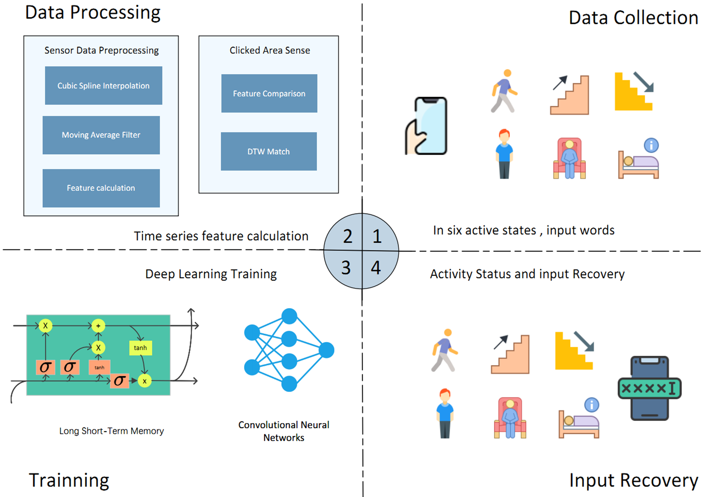
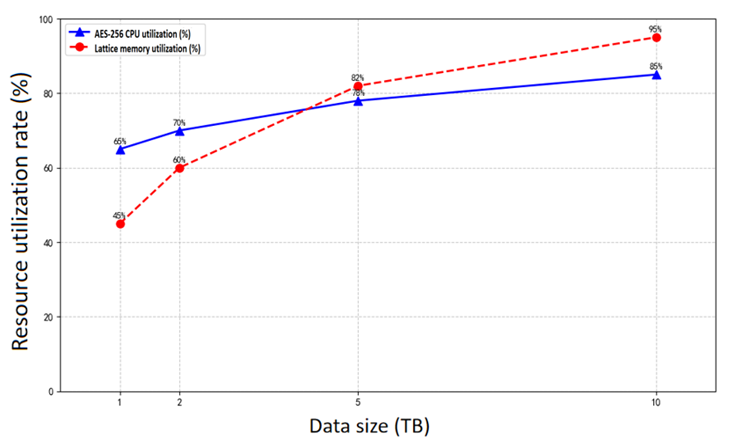
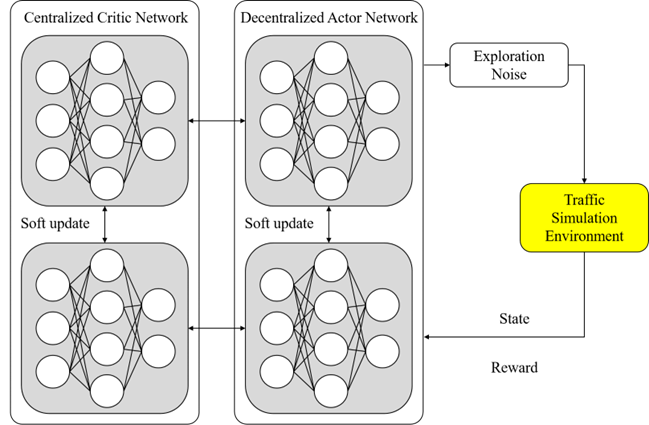
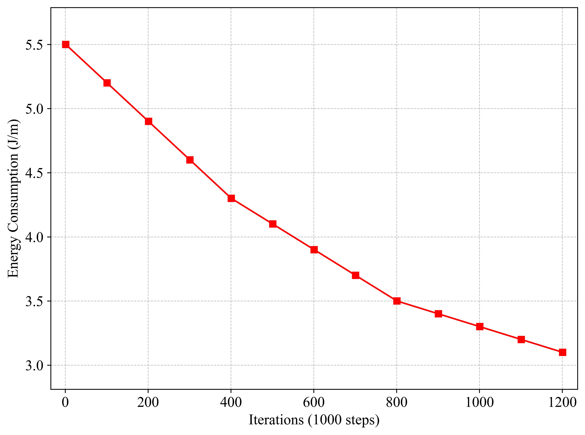
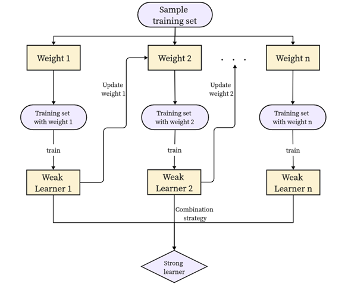
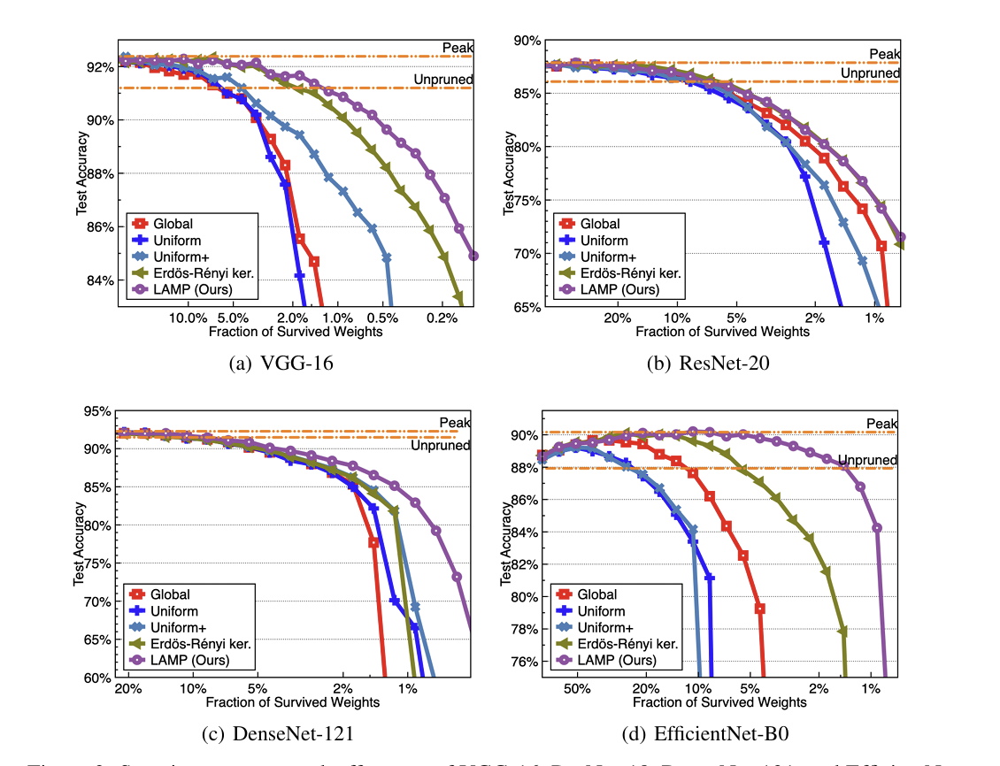
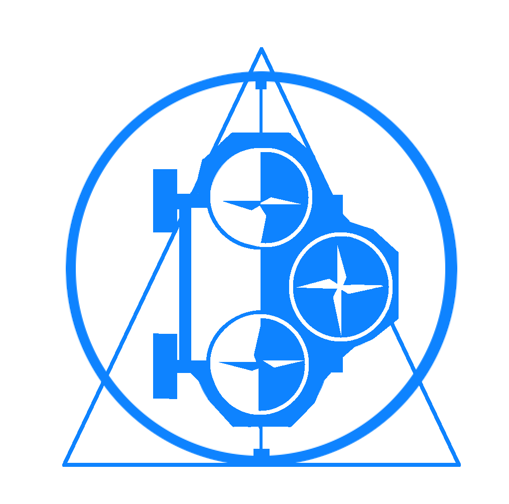

|
Hongyi Hao 「郝泓毅」
|
|
| CV |
Email |
Google
Scholar |
| Github |
Bilibili |
|
I am a senior undergraduate student majoring in computer science at Shanxi Institute of Technology. I specialize in
Reinforcement Learning and Robotics.
Goal: Develop advanced robotic systems that can revolutionize various
industries and improve people's lives.
Focus: How to improve the autonomy, safety, and adaptability of robots
through innovative algorithms? How to combine artificial intelligence and machine
learning to enable robots to learn and make intelligent decisions from different
real-world scenarios?
Method: Research and implement state-of-the-art machine learning
algorithms, and conduct extensive experiments to optimize robot performance.
Robots: I am passionate about exploring the potential of humanoid
robots. My goal is to develop humanoid robots that can perform complex tasks in
challenging environments.
Email: Lanyi_adict[AT]outlook.com
|

|
EEGAuth: A Secure and Lightweight EEG-Based System Integrating
Authentication and Key Generation
Xun Han, Jun Xiao, Yifan Liu, Ruilin Zhang, Kaibiao Zhu, Hongyi Hao, Youqi Li,
Fan Li, Qian Zhang
IEEE Internet of Things Journal (IEEE IoT-J), 2025
Electroencephalography (EEG) signals have emerged as a
novel biometric feature in identity authentication. However, in highly
sensitive scenarios such as remote access control and sensitive
operation confirmation, identity authentication alone is insufficient to
ensure system security. This paper proposes EEGAuth, an EEG-based secure
and lightweight authentication system with cryptographic key generation,
addressing the demand for integrated systems that enhance both security
and user convenience by combining identity authentication and key
generation into a unified solution. The proposed system employs a
genetic algorithm for optimal channel selection, integrates a discrete
wavelet transform with an autoencoder-based feature extraction
framework, and implements a CNN-based architecture for robust identity
authentication. In addition, the system discretizes feature vectors to
generate unique and repeatable seeds, which are used as inputs to a
secure hash function to produce keys. The evaluation results show that
our model achieves a classification accuracy of 99.38% with only 15
channels, significantly outperforming state-of-the-art methods and
baseline models. The generated cryptographic keys demonstrate robust
security properties, as evidenced by their successful passage through
NIST statistical test suite for randomness verification, scale index
analysis for aperiodicity assessment, and autocorrelation testing for
bit-sequence independence, collectively confirming their resistance to
cryptographic attacks and compliance with security standards.
@ARTICLE{11216104,
author={Han, Xun and Xiao, Jun and Liu, Yifan and Zhang, Ruilin and Zhu, Kaibiao and Hao, Hongyi and Li, Youqi and Li, Fan and Zhang, Qian},
journal={IEEE Internet of Things Journal},
title={EEGAuth: A Secure and Lightweight EEG-Based System Integrating Authentication and Key Generation},
year={2025},
volume={},
number={},
pages={1-1},
keywords={Electroencephalography;Authentication;Security;Feature extraction;Accuracy;Biometrics;Brain modeling;Immune system;Discrete wavelet transforms;Indexes;EEG;authentication;key generation;biometric security},
doi={10.1109/JIOT.2025.3624586}}
|

|
VoteRFID: Multi-Target Rotation Recognition Algorithm Based on Phase
Encoding via Markov Transition Field
Zhonghao Wang, Hongyi Hao, Biaokai Zhu, et al.
International Symposium on
Parallel and Distributed Processing with Applications (ISPA 2025)
With the rapid development of the Industrial Internet of
Things (IIoT), wireless sensing technology plays a crucial role in
equipment condition monitoring. Nevertheless, multi-target rotating
machinery faces challenges such as untimely fault detection and low
fault diagnosis efficiency. In response, we propose VoteRFID, a system
that leverages RFID sensing technology to capture phase variations
induced by the rotation process for real-time fault screening. By
employing a Markov Transition Field to encode temporal phase
information, we transform phase features that are difficult to recognize
directly during rotation into more robust Markov transition matrices.
This transformation significantly enhances the stability and
discriminative power of feature representation. Additionally, based on
the properties of the transition matrices, a lightweight random forest
classification algorithm is designed to achieve high performance, even
on small-scale datasets. Deployed on USRP-N210 devices and COTS RFID
tags, VoteRFID undergoes practical performance testing, yielding a fault
recognition accuracy of up to 99.57 % for rotating objects at Industrial
speeds of up to 175 Hz(10500rpm).
@INPROCEEDINGS{11245427,
author={Wang, Zhonghao and Hao, Hongyi and Zhu, Biaokai and Li, Yiran and Guo, Yaxuan and He, Jiaqi and Zhang, Qian},
booktitle={2025 IEEE International Symposium on Parallel and Distributed Processing with Applications (ISPA)},
title={VoteRFID: Multi-Target Rotation Recognition Algorithm Based on Phase Encoding via Markov Transition Field},
year={2025},
volume={},
number={},
pages={132-139},
keywords={Performance evaluation;Wireless sensor networks;Accuracy;Fault detection;Software;Sensors;Classification algorithms;RFID tags;Industrial Internet of Things;Signal to noise ratio;IIoT;RFID;Markov;Random Forest;Rotating Phase},
doi={10.1109/ISPA67752.2025.00027}}
|

|
Temperature-Aware Liquid Sensing with mm-Wave Radar
Zeyu Fan, Zhaokui Wang, Hongyi Hao, et al.
International Symposium on
Parallel and Distributed Processing with Applications (ISPA 2025)
Liquid identification plays an important role in various
real-world applications such as industrial manufacture and smart
logistics. Recent studies have demonstrated the effectiveness of
wireless signals for liquid material identification. However, the impact
of temperature fluctuations on identification accuracy remains
unexplored, which may degrade system performance. In this paper, we
propose T-LiquID, a robust liquid identification algorithm designed to
maintain high accuracy across varying temperatures. The key insight
behind T-LiquID is exploiting the relatively stable relationship between
wireless signals at different frequencies after reflecting from the
liquid surface. By leveraging this intrinsic characteristic, our method
ensures reliable identification despite environmental temperature
variations. We implement mm-LiquID with COTS(commercial off-the-shelf)
millimeter-wave FMCW(frequency-modulated continuous-wave) radar, and
evaluate its performance with comprehensive experiments. The
experimental results show that T-LiquID achieves an average
identification accuracy of 95 % under temperature fluctuations from 20
to 95° C.
@INPROCEEDINGS{11245404,
author={Fan, Zeyu and Wang, Zhaokui and Hao, Hongyi and Lv, Zhao and Li, Ping},
booktitle={2025 IEEE International Symposium on Parallel and Distributed Processing with Applications (ISPA)},
title={Temperature-Aware Liquid Sensing with mm-Wave Radar},
year={2025},
volume={},
number={},
pages={228-237},
keywords={Temperature sensors;Wireless communication;Wireless sensor networks;Liquids;Accuracy;Temperature;Fluctuations;Feature extraction;Sensors;Millimeter wave communication;Temperature aware;Permittivity;Liquid identification;FMCW},
doi={10.1109/ISPA67752.2025.00039}}
|
|

|
ECHOES: Input Sensing and Reconstruction Model Utilizing CNN and LSTM
with Mobile Sensor Date
Hongyi Hao*
2025 5th International Conference on Intelligent Communications and
Computing (ICICC 2025)
The widespread integration of sensors such as accelerometers and
gyroscopes in smartphones has significantly enhanced user experience,
but also introduced new vulnerabilities exploitable by side-channel
attacks. These attacks can infer user input by analyzing motion patterns
generated during touch interactions. To mitigate this threat and improve
input recognition accuracy, we propose ECHOES, a side-channel analysis
framework designed to recover user input on touchscreen keyboards.
ECHOES comprises two key modules: (i) a sensing module that collects
inertial sensor data and virtual memory change patterns, employing
convolutional neural networks to detect the user's motion state and
classify touch interactions into predefined keyboard regions; and (ii) a
language inference module that leverages the click region sequence and
natural language processing to reconstruct the user's intended input. To
further improve localization under spatial ambiguity, the keyboard is
partitioned into five regions to constrain candidate outputs.
Experimental results demonstrate that ECHOES achieves 94.01% accuracy in
motion state recognition and 91.63% accuracy in input restoration,
underscoring its potential for exposing security risks in mobile input
systems.
@INPROCEEDINGS{11199435,
author={Hao, Hongyi},
booktitle={2025 5th International Conference on Intelligent Communications and Computing (ICICC)},
title={ECHOES: Input Sensing and Reconstruction Model Utilizing CNN and LSTM with Mobile Sensor Data},
year={2025},
volume={},
number={},
pages={01-06},
keywords={Location awareness;Accuracy;Keyboards;Tactile sensors;Touch sensitive screens;Natural language processing;User experience;Security;Convolutional neural networks;Smart phones;Smartphone sensors;Activity recognition;Keystroke inference;Deep learning},
doi={10.1109/ICICC66840.2025.11199435}}
|
|
|
Multidimensional Data Query Processing Methods Using Artificial
Intelligence and Machine Learning Algorithms
Hongyi Hao*
2025 2nd International Conference on Software, Systems and Information
Technology (SSITCON)
To address the problems of low query efficiency and load imbalance in
high-dimensional data, this paper proposes a multidimensional data query
processing framework that integrates hybrid indexing, machine
learning-driven load balancing, and automated tuning. First, a hybrid
index combining KD trees and autoencoders is constructed to compress
high-dimensional data through spatial partitioning and deep
dimensionality reduction. An LSTM-based load prediction module and
adaptive partitioning strategy are designed to dynamically optimize data
distribution. Finally, a tuning mechanism combining Bayesian
optimization and reinforcement learning is employed to achieve
multi-objective parameter adaptive optimization. Experiments show that,
for 100-dimensional data, the hybrid indexing approach achieves a
response time of only 65.7ms and a memory usage of 210.5MB (compared to
620.9MB for a pure KD-tree). The dynamic load balancing strategy
improves throughput by 55.2% under bursty traffic, optimizing the load
balance to 0.22. The proposed framework significantly enhances
high-dimensional query efficiency and system resiliency.
@article{hao2025yolo,
title={Structured Pruning for Efficient YOLO11 Deployment: A Comparative Study of LAMP and SPPF Algorithms},
author={Hongyi Hao},
journal={ICMAEE 2025},
year={2025}
}
|
|

|
Data Security Strategies and Technologies for Robust Cloud Computing
Hongyi Hao*
Discover Applied Sciences
Cloud computing is widely adopted across industries such as finance and
government, yet ensuring data security in the cloud remains a
significant challenge. This study reviews key data security
technologies—including encryption, access control, and
privacy-preserving computation—and evaluates their effectiveness through
real-world case studies. Findings indicate that no single technology
provides comprehensive protection; instead, integrating multiple
approaches—such as encryption, zero trust, and threat
intelligence—offers a stronger defense. A collaborative, layered
security strategy significantly enhances resilience against
cyberattacks, particularly in multi-cloud environments. The results
provide practical guidance for organizations to design robust cloud
security frameworks that balance security, performance, and cost, while
supporting innovation and regulatory compliance.
@article{hao2025cloud,
title={Data Security Strategies and Technologies for Robust Cloud Computing},
author={Hongyi Hao},
journal={Discover Applied Sciences},
year={2025},
note={EI Accepted}
}
|
|

|
Research and Application of Multi-Agent Cooperative Decision Algorithm
Based on Deep Reinforcement Learning
Hongyi Hao*
ICDACAI 2025
In complex dynamic environment, there are some problems in multi-agent
collaborative decision-making, such as non-stationarity, credit
distribution deviation and imperfect topological relationship modeling.
In this article, the deep reinforcement learning (DRL) algorithm
Att-GNN-MARL, which combines attention mechanism and GNN, is proposed to
improve the cooperative efficiency and strategic stability of
multi-agent system (MAS). Based on the centralized training
decentralized execution (CTDE) framework, this study uses graph neural
network (GNN) to model the spatial connection of agents, introduces
attention mechanism to enhance the perception of key neighbors, and
designs a counterfactual reward correction mechanism to optimize local
credit allocation. In the collaborative control scenario of urban
traffic signals, the experiments based on real road network on SUMO
simulation platform show that the proposed algorithm reduces the average
waiting time of vehicles to 54.3 seconds during rush hours, which is
22.3% less than that of QMIX. The total traffic volume reached 24,108
vehicles, which was significantly better than the comparison method. The
number of rounds of strategy convergence is 640, and the learning
efficiency is good. The research shows that the cooperative learning
mechanism combining structural perception and dynamic attention can
improve the overall performance of MAS in highly coupled tasks to some
extent.
@article{hao2025madrl,
title={Research and Application of Multi-Agent Cooperative Decision Algorithm Based on Deep Reinforcement Learning},
author={Hongyi Hao},
journal={ICDACAI 2025},
year={2025}
}
|
|

|
Cross-embodied Reinforcement Learning Control Method for Quadruped
Robots on Complex Terrain
Hongyi Hao*
2025 International Conference on Computing, Robotics and System
Sciences (ICRSS 2025)
With the widespread application of quadruped robots in complex terrains,
achieving efficient and stable motion control in these changing
environments has become a key issue. Traditional control methods often
rely on pre-set control rules or models, which struggle to maintain
consistency across different platforms and complex terrain conditions.
This paper proposes a control method for quadruped robots based on
cross-embodied reinforcement learning (C-ERL), aiming to address the
robot's adaptability to diverse challenges in complex terrain. By
introducing a reinforcement learning framework and an adaptive reward
function, this method not only optimizes the robot's motion control on
flat terrain, slopes, rocky areas, and loose gravel, but also enables
cross-platform transfer of control strategies. Experimental results show
that using this method, the quadruped robot achieves an 8% increase in
average speed, a 15% improvement in posture stability, a 12% reduction
in specific energy consumption, and a task completion rate exceeding 90%
across various complex terrains. In terms of cross-platform transfer,
the robot's overall score varies less than 5% between platforms,
demonstrating strong cross-embodied adaptability. This study provides a
new solution for the efficient control of quadruped robots in dynamic
and complex environments and lays a foundation for the further
development of cross-embodied control technology.
@inproceedings{hao2025crlc,
title={Cross-embodied Reinforcement Learning Control Method for Quadruped Robots on Complex Terrain},
author={Hao, Hongyi},
booktitle={Proceedings of the 2025 International Conference on Robotics and Smart Systems},
pages={1--8},
year={2025},
organization={IEEE}
}
|
|

|
Stability Analysis of Polygonal Slopes Considering Spatial Variability
of Soil Parameters
Hongyi Hao*
2025 2nd International Conference on Intelligent Computing and Data
Analytics (ICDA 2025)
Slope stability analysis is a critical issue in geotechnical engineering.
Traditional mechanical models are computationally intensive and
inefficient, while incorporating the spatial variability of soil/rock
parameters can significantly improve the accuracy of analysis results.
To address this, this study proposes an efficient and accurate
prediction model for slope safety factors by integrating spatial
variability of geotechnical parameters with machine learning algorithms.
The research employs Latin Hypercube Sampling (LHS) and random field
simulation to generate soil parameters with spatial variability,
followed by predictive modeling using the Cat Boost (Categorical
Boosting) algorithm. Results demonstrate that the Cat Boost model
outperforms Support Vector Machine (SVM) and Random Forest (RF) models
across multiple metrics, including accuracy (93% on the test set),
precision, recall, and AUC. The proposed method, combining spatial
variability with machine learning, offers a more precise and efficient
approach to slope stability assessment.
@article{hao2025slope,
title={Stability Analysis of Polygonal Slopes Considering Spatial Variability of Soil Parameters},
author={Hongyi Hao},
journal={ICICDA 2025},
year={2025}
}
|
|

|
Structured Pruning for Efficient YOLO11 Deployment: A Comparative Study
of LAMP and SPPF Algorithms
Hongyi Hao*
2025 International Conference on Mechanical Automation and Electronic
Engineering (ICMAEE 2025)
This study explores the integration of two structured pruning techniques
- Layer Adaptive Magnitude Pruning (LAMP) and Spatial Pyramid Pooling
Framework (SPPF) - into YOLO-based object detection models to enhance
their deployment efficiency on edge computing platforms with limited
computational resources. LAMP achieves high compression rates by
dynamically adjusting the sparsity of each layer, making it particularly
suitable for real-time applications such as medical imaging (e.g., rib
fracture detection) and traffic monitoring, providing an effective
solution for mobile terminal deployment. Meanwhile, SPPF improves
multi-scale feature fusion and enhances detection robustness in complex
environments (such as forestry pest identification and satellite image
analysis), significantly boosting the model's generalization ability.
Experimental evaluations across multiple domains including medical
diagnosis, agricultural monitoring, and intelligent transportation
demonstrate that these two methods not only significantly reduce model
size and computational overhead but also maintain or even improve
detection accuracy. These findings offer practical insights for
optimizing lightweight YOLO variants, facilitating their widespread
adoption in practical edge AI applications that prioritize efficiency
and accuracy.
@article{hao2025yolo,
title={Structured Pruning for Efficient YOLO11 Deployment: A Comparative Study of LAMP and SPPF Algorithms},
author={Hongyi Hao},
journal={ICMAEE 2025},
year={2025}
}
|
- National Second Prize in the 19th "Challenge Cup" National
College Students' Extracurricular Academic and Technological Works Competition
- Silver Award in China International College Students'
Innovation and Entrepreneurship Competition (2025) Shaanxi Regional Final -
Higher Education Main Track
- Second Prize in the "Youth Innovation and Entrepreneurship
Competition of Shanxi Central Urban Agglomeration 'Creating Youth'"
- Third Prize in the "Zhongkong Xinda Cup" North China Five
Provinces and Hong Kong, Macao and Taiwan College Students Computer Programming
Competition
- Second Prize in the 2025 Shanxi Province "Five Small"
Innovation Competition
- Excellence Award in the "Maker China" Shanxi Small and
Medium-sized Enterprise Innovation and Entrepreneurship Competition
- Second-class Department Scholarship in 2022-2023 Academic
Year
- Third-class Department Scholarship in 2023-2024 Academic Year
- Individual Scholarship in 2023-2024 Academic Year
- Second-class Department Scholarship in 2024-2025 Academic
Year
- Awarded the “Outstanding Student (三好学生)” Title by the College
in September 2025
|
- Nanjing ArcherMind Technology (2023.6 -
2023.8)
- Nanjing Institute of Automation, Chinese Academy
of Sciences (2024.6 - Present)
- Carnegie Mellon University, Distributed
Machine Learning: Foundations and Algorithms (2025.5.10 - 2025.8.8)
|
|
Invention Patents and Software Works
|
|
Utility model patent:
- A sidewall bracket for a multi-beam visible laser (CN223388326U)
- A comprehensive inspection robot for precast beam products (CN223419556U)
- A forced centering measurement target device (CN223389191U)
- An adjustable top mounting for multi-beam visible lasers (CN 223460212 U)
Invention Patents:
- Tunnel RGB laser projection positioning device (CN 309398989 S)
- A refined production method for ultra-high performance concrete premix (CN120645311B)
- An Automatic Deviation-Correction Drilling Device for Tunnel Inner Walls
(CN118361189 B)
- A Wall Bracket for Multi-Beam Visible Laser Devices (CN223388326 U)
- A Forced Centering Measurement Target Device (CN223389191 U)
Design Patents:
- Security Robot (CN308942412 S)
- Tunnel RGB laser projection positioning device (CN309398989 S)
Software Copyrights:
- Automatic Geological Radar Data Transmission System V1.0 (2024SR0823813)
- Underground Space Concrete Quality Monitoring and Management System V1.0 (2024SR0823820)
- Psychological Test Mini-Program V1.0 (2024SR0668850)
- Tunnel Laser Projection Contour Model Making Software V1.0 (2024SR1961537)
- Tunnel Laser Projection Coordinate Conversion Software V1.0 (2024SR1966975)
- Programming Language Intelligent Learning Assistance Software V1.0
(2025SR0328689)
- Computer Network Security Protection Software V1.0 (2025SR0380865)
- Tunnel Drill Hole Coordinate Positioning Calculation Software V1.0
(2025SR2013678)
|
|

|
Hongming Intelligent Technology Team 「弘茗智能科技团队」
Founded by Hao Hongyi at the undergraduate level, we are committed to
the research and development of advanced robotics and artificial
intelligence systems, and will also conduct research in software
engineering, simulator, microelectronics, mechanical design,
Reinforcement Learning, Deep Learning and other related directions
according to personal development direction.
|
|
{kind=link}